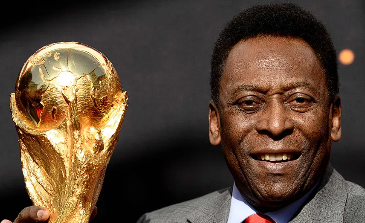
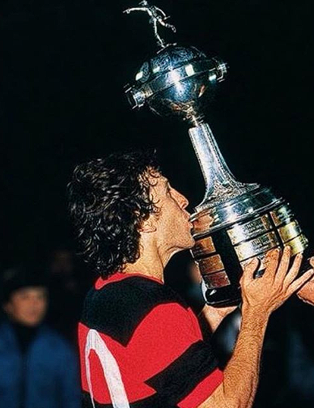

Meus jogadores favoritos

Pelé
Considerado um dos maiores jogadores de todos os tempos, Pelé conquistou três Copas do Mundo e revolucionou o futebol.

Zico
Conhecido como o "Galinho", Zico é um dos maiores ídolos do Flamengo e um dos maiores jogadores brasileiros de todos os tempos.
Ronaldo Fenômeno
Ronaldo, também conhecido como "Fenômeno", é um dos atacantes mais icônicos da história do futebol, com duas Copas do Mundo no currículo.